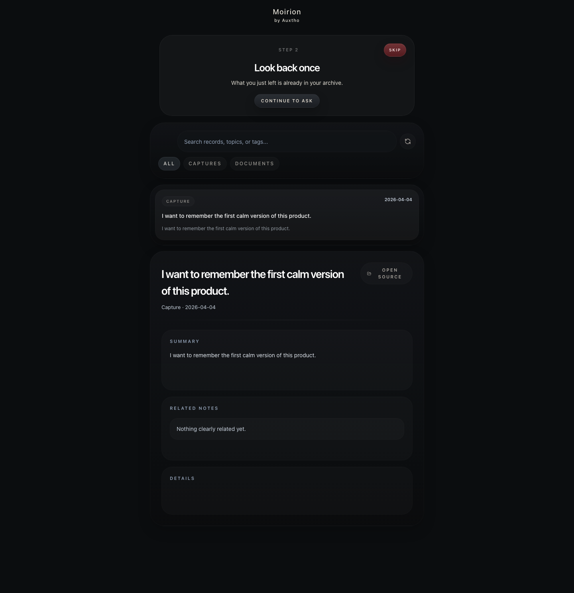
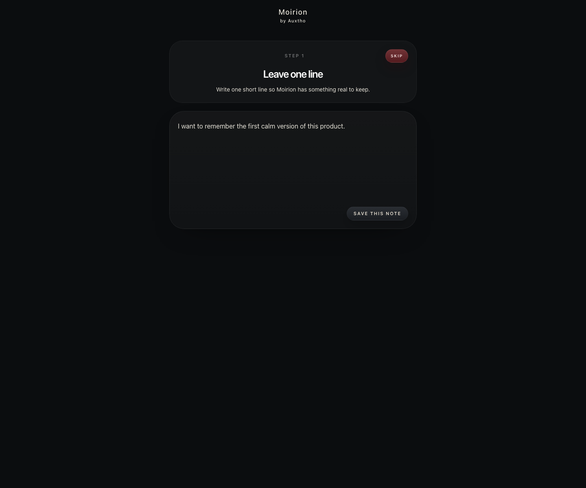
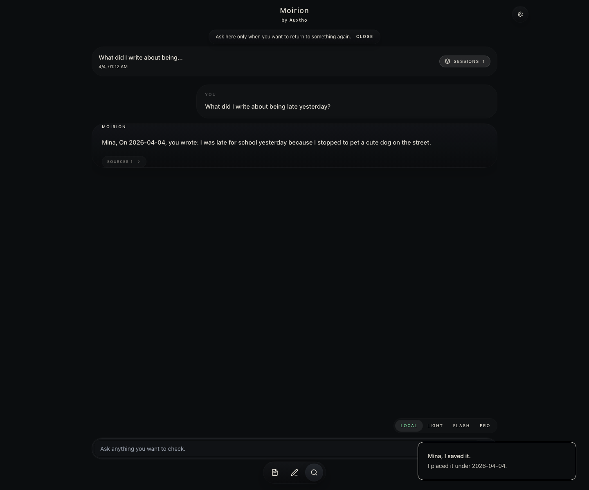

Capture the day
Write as much or as little as you want.
Private journal · Local AI
Keep the day in your own words. When you want another perspective, talk with the entry you chose.
Write and browse without an account. Your original entry stays close.

A journal first
Moirion begins as a simple place for moods, moments, ideas, and the details you do not want to lose. AI remains a second layer, available only when it helps.

Write as much or as little as you want.
Browse your journal without digging through a feed.
Your original stays separate from summaries and replies.
When you want to talk
Choose something you wrote and ask naturally. Moirion keeps the reply close to that journal entry instead of turning the app into a general chatbot.

Open a day or moment you want to revisit.
Ask what helped, how you felt, or simply ask it to listen.
Open the current original whenever exact wording matters.
On your Mac
Writing, browsing, and opening an original entry work without a cloud account. AI conversation can run through a compatible model installed on your Mac.
Today
Moirion is in active development. The Mac App Store build is being prepared, while the iPhone version continues through validation.
The Mac app will be distributed through the Mac App Store. The previous direct installer has been retired.
Writing, archive, selected-record local conversation, current-source opening, and English/Korean flows are working while save recovery and correction handling are refined.
The core flow runs in Simulator. Physical-device validation and TestFlight release have not been completed.
Before you start
Moirion is a lightweight private journal. Write first, then use local AI to talk with a day or entry when you want to revisit it.
No. You can start using Moirion locally without creating an account.
Not by default. Your notes stay on your machine unless you choose to export, upload, or connect something.
No. Writing, archiving, and opening originals work first. Conversation requires a compatible model available on your Mac.
Gemma and Qwen are part of current local testing. Model quality and speed vary by hardware and model size.
Not publicly yet. The app is running in Simulator, while physical-device validation and TestFlight release remain in progress.
Mac App Store
Moirion for Mac will be released through the Mac App Store. The previous direct installer has been retired while the store build is prepared.
macOS — Mac App Store release in preparation
iPhone — development build; Simulator validation underway
Windows — not available